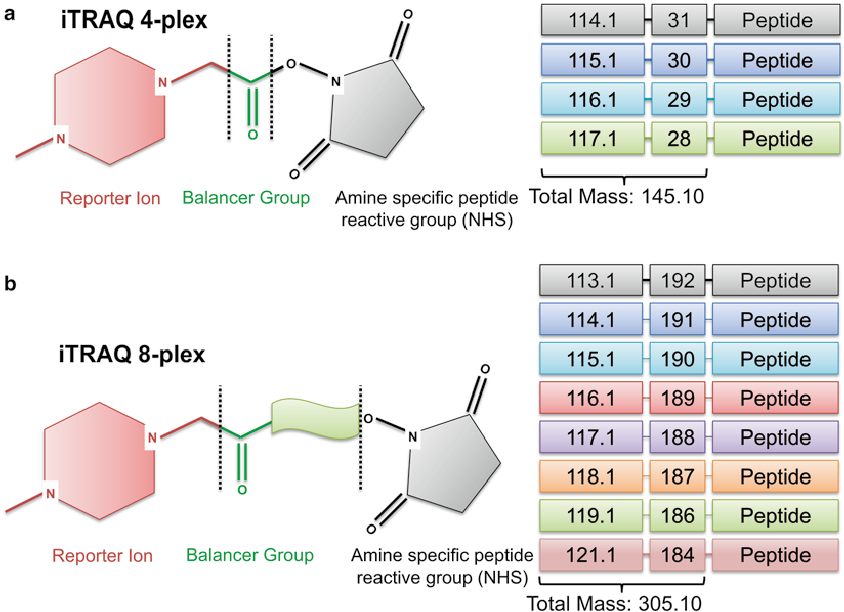

#+BEGINNOTES:
#+ENDNOTES
| Run | 114 | 115 | 116 | 117 |
|---|---|---|---|---|
| 1 | AIS C Improver @ 2-weeks | AIS C Improver @ 3-months | AIS C Non-Improver @ 2-weeks | AIS C Non-Improver @ 3-months |
| 2 | AIS C Improver @ 2-weeks | AIS C Non-Improver @ 2-weeks | AIS A | AIS D |
Eng, Jimmy K., Ashley L. McCormack, and John R. Yates. n.d. “An Approach to Correlate Tandem Mass Spectral Data of Peptides with Amino Acid Sequences in a Protein Database” 5 (11). American Chemical Society:976–89. https://pubs.acs.org/doi/abs/10.1021/jasms.8b00502.